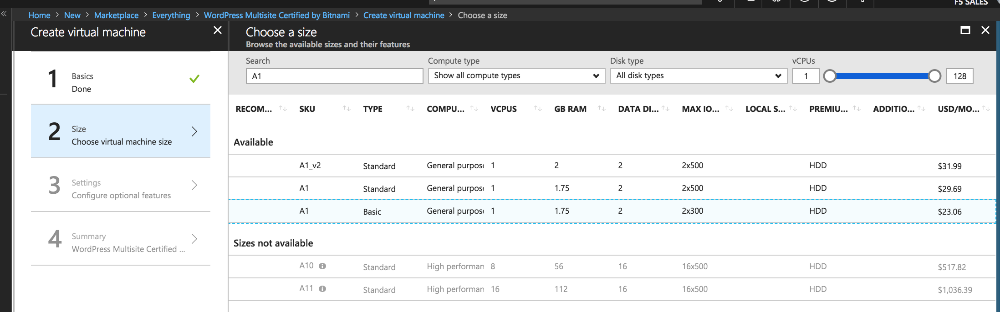

Community Training Classes & Labs > Azure F5 Lab Days Index
2.2.1. Lab 2 – Deploy an F5 Web Application Firewall using the Azure Security Center¶
This lab will teach you how to deploy a WordPress server in Azure and protect the application with an F5 WAF via the Azure Security Center (ASC). The ASC will automatically discover vulnerabilities within your Azure resources. Things like publicly accessible IPs listening on HTTP and HTTPS will be flagged in ASC and marked for review. The customer can take action which can include deployment of a WAF. Therefore, we’ll expose a WordPress server and let ASC find the problem for us. After a few questions and answers, a WAF will be deployed automatically.
2.2.1.1. Lab 2 – Topology¶

2.2.2. Task 1 – Setup basic cloud components in Azure¶
Basic cloud components are needed first. Things like Virtual Networks and Resource Groups are required prior to deployment of virtual machines. You will configure these items in preparation for the WordPress deployment.
Log into the Microsoft Azure Portal – https://portal.azure.com
Click the green + sign at the top left corner of the screen
Click on Networking
Click on Virtual network

Use the information provided in Table 2.1 below to create a virtual network.
Table 2.1
Key Value Name user<student number>_vnet Address space 10.10.0.0/16 Subscription <User Unique> Resource group Create new: wordpress Location <Closest Azure DC> Address Range 10.10.0.0/22 
Click Create
2.2.3. Task 2 – Deploy and configure WordPress within Azure¶
In this task you will deploy another virtual machine and install the WordPress application to be placed behind the BIG-IP. Let’s go back to the Microsoft Azure Portal.
Click the green + sign at the top left corner of the screen
Start searching the marketplace by typing ‘bitnami wordpress’ in the search field and hit Enter

Select WordPress Certified by Bitnami

Click on Create at the bottom of the screen
Use the information in Table 2.2 to complete the “Basics” configuration page during this deployment.
Table 2.2
Key Value Name user<student number>wordpress VM disk type SSD User name f5bigipuser<student number> Authentication type SSH public key SSH public key From Lab 1, Task 1 Subscription <User Unique> Resource Group Use existing: wordpress Location <Closest Azure DC> 
Click OK at the bottom of the page
Use the information in Table 2.3 to complete the “Choose a size” configuration page during this deployment.
Table 2.3
Key Value Disk Type HHD Size A1 Basic Choose A1 Basic
Click Select
Use the information in Table 2.4 to complete the “Settings” configuration page during this deployment.
Note
On the Settings page you’ll see a warning concerning the VM size chosen.
Table 2.4
Key Value Storage Type HHD Use managed disks No Change the “Disk type” to HDD
Set “Use managed disk” to No
Keep the other configurations unmodified

Click OK
Verify the summary

Click Create
Go to Resource groups and click on your resource group
Select your WordPress “Public IP address”


Note
Remember the WordPress public IP address. This will be used in subsequent steps.
{kind=link}
2.2.4. Task 3 – Access WordPress instance and launch a SQL Injection attack¶
The next task involves testing the application and checking for open vulernabilities. You will need to access your WordPress instance and launch a simple SQL Injection attack.
Open a web browser and navigate to http://<wordpress-public-IP>
Navigate to the Search box. You can do this via two methods:
- Scrolling down the page with the browser scroll bars
- Or…
- Click the X in the lower right corner of the screen
- Close the Manage link
- Click the arrow in bottom right corner of the screen
In the search box, enter the string
'or 1=1#to launch the SQL Injection attack.
Hit Enter
Perform this task several times to simulate an attack
Although the WordPress application does not respond with any records, there are in fact no safeguards against this SQL injection attack.
Note
'or 1=1#is an example of a simple SQL Injection attack. A SQL injection attack consists of insertion or “injection” of a SQL query via the input data from the client to the application. A successful SQL injection exploit can read sensitive data from the database, modify database data (Insert/Update/Delete), execute administration operations on the database (e.g. shutdown the DBMS), recover the content of a given file present on the DBMS file system, and in some cases issue commands to the operating system.
2.2.5. Task 4 – Accept EULA for F5 WAF in Azure Marketplace¶
Prior to using Azure Security Center or other Marketplace items, you must enable that particular item in Azure Marketplace (e.g. accept EULA). In this task you will go to the Azure Marketplace and enable the F5 WAF Solution for ASC.
Note
If you have already performed this step in your Azure account, then you can skip this task and move to the next task.
Open a browser and go to https://azuremarketplace.microsoft.com/en-us/marketplace/apps/f5-networks.f5-web-application-firewall

Click GET IT NOW
Complete the sign in process using the email address used to set up your account.
Accept the EULA by clicking Continue

2.2.6. Task 5 – Launch Azure Security Center and deploy the F5 WAF¶
Among other things, Azure Security Center (ASC) makes recommendations to optimize and secure your web applications. You will now follow the recommendation from ASC to deploy the F5 pre-configured WAF in front of your WordPress application.
Go back to the Microsoft Azure portal and navigate to Azure Security Center.

Click on Security Center -> Welcome
Click Launch Security Center and notice that ASC has recommendations for your environment

Click on Recommendations
Tip
Recommendations are created by the Azure Security Center to make your applications more secure. One of the recommendations is to Add a web application firewall.
In the “Recommendations” page, select the Add a web application firewall
Click on the name of the application to the right of the screen
Example: user<student number>wordpress-ip in the screenshot below

Note
If the name of your WordPress does not appear, please wait a few minutes until Azure Security Center can create the Recommendations.
Click on Create New

Select F5 Networks

Note
There are two deployment methods available today for the pre-configured F5 WAF:
- “Automatically provisioned”
- “Semi-automatically provisioned”
For this lab you will be using the “Automatically provisioned” method.
Select the option for Automatically provisioned

Click Create
Use the information in Table 2.5 to complete the “VM Configuration” page during this deployment. Leave all other settings as default.
Table 2.5
Key Value Password Demo123 
Click OK
Use the information in Table 2.6 to complete the “WAF Information” page during this deployment. Leave all other options as default.
Table 2.6
Key Value License token <license provided by the proctor> Internal server port HTTP (note two locations) 
Click OK
Click Create

Note
Deployment time can take up to 30 minutes.
Click on the Resource Group that deployed the F5 WAF
Hint
It will be named wordpress-asc…

Click on Public IP address

Note
Remember the F5 public IP address. This will be used in subsequent steps.

Open a web browser and go to the BIG-IP GUI at https://<Public-IP:8443> to see when the platform completes the deployment
Login as admin and use the password you entered during the WAF deployment process.

Warning
The deployment takes time. If you observe it from the GUI, you will see a reboot. This automated background deployment (licensing, creating the pool and virtual server) may take 10 minutes or longer. Please be patient and do not interrupt this process. Once the Virtual Server is created, the setup of F5 WAF is complete.
Review the F5 configurations by first going to LTM -> Virtual Servers
Review the LTM -> Pools
2.2.7. Task 6 – Demonstrate F5 WAF blocking functionality¶
As part of the WAF deployment, a new F5 VIP (virtual IP/listener) has been configured for the WordPress application that sits behind an Azure NAT rule. Additionally, a base WAF policy has been configured automaticaly for the application.
To test the WAF policy, you will repeat the SQL injection attack from a previous lab against the WordPress application. However this time you will access the WordPress application through the F5 protected WAF policy.
Open a web browser and go to http://<F5-public-IP>
Note
The public IP address is the same IP address used to access the BIG-IP. The Azure NATs found within the Azure load balancer (ALB) control the NAT decisions. This allows proper traffic direction depending on if it is F5 management traffic or client/server traffic.
Essentially, we have deployed the F5 WAF in single-nic mode. Azure LB can only send traffic to the first network interface of a VM instance. The F5 WAF security solution therefore runs a single IP that accepts management traffic as well as client/server traffic based on traffic received at the Azure LB NAT.
Navigate to the Search box. You can do this via two methods:
- Scrolling down the page with the browser scroll bars
- Or…
- Click the X in the lower right corner of the screen
- Close the Manage link
- Click the arrow in bottom right corner of the screen
In the search box, enter the string
'or 1=1#to launch the SQL Injection attack.
Hit Enter
Perform this task several times to simulate an attack. Notice that the F5 BIG-IP WAF policy is now protecting the WordPress application from this SQL injection attack.

Open another web browser and go to the BIG-IP GUI at https://<F5-public-IP:8443>
Go to Security -> Event Logs -> Application -> Requests

Click on the line with the highest “Violation Rating” link to view full request information

Click on Attack signature detected

Click on View details…

Note
The F5 WAF has successfully detected the SQL injection attack and protect the WordPress application.
2.2.8. Task 7 – Finalize the WAF Deployment¶
Now that you have successfully tested the path to WordPress through the F5 BIG-IP, you need to finalize the WAF deployment. Currently access still works direct to the WordPress application via public IP address http://<wordpress-public-IP as demonstrated in Task 1 of this lab. Finalizing the WAF deployment will eliminate the ability to access the WordPress application directly. Access to the WordPress application will only be available through the F5 BIG-IP.
Go back to the Microsoft Azure portal and navigate to Azure Security Center
Click on Security Center -> Overview

Click Recommendations
Select Finalize web application firewall setup

Click on the WordPress application

Check I updated my DNS record and click Restrict traffic

Note
In a production environment you would first want to update your DNS records to point to the new BIG-IP VIP.
The process takes a couple minutes. When complete, now you can verify access has been restricted and WordPress is no longer directly accessible through the original WordPress public IP.
Open a web browser and go to http://<wordpress-public-IP>
Notice that the page no longer loads

Sanity check…test access via the F5 WAF again and go to http://<F5-public-IP>

Attention
Testing WordPress by going through the F5 should successfully load. Testing WordPress IP directly should fail.

This concludes Lab 2